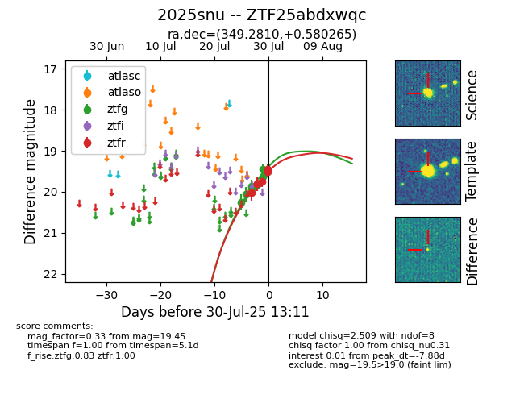

Target 2025snu at 2025-07-30 13:11, see:
FINK: fink-portal.org/2025snu
Lasair: lasair-ztf.lsst.ac.uk/objects/2025snu
ALeRCE: alerce.online/object/2025snu
TNS: wis-tns.org/object/2025snu
YSE: ziggy.ucolick.org/yse/transient_detail/2025snu
alt names
ZTF25abdxwqc (ztf,fink)
2025snu (tns,yse)
coordinates:
equatorial (ra, dec) = (349.2810,+0.58027)
galactic (l, b) = (79.7968,-54.19632)
photometry
last ztfg=19.62, ztfr=19.45
7 ztfg, 6 ztfr detections
